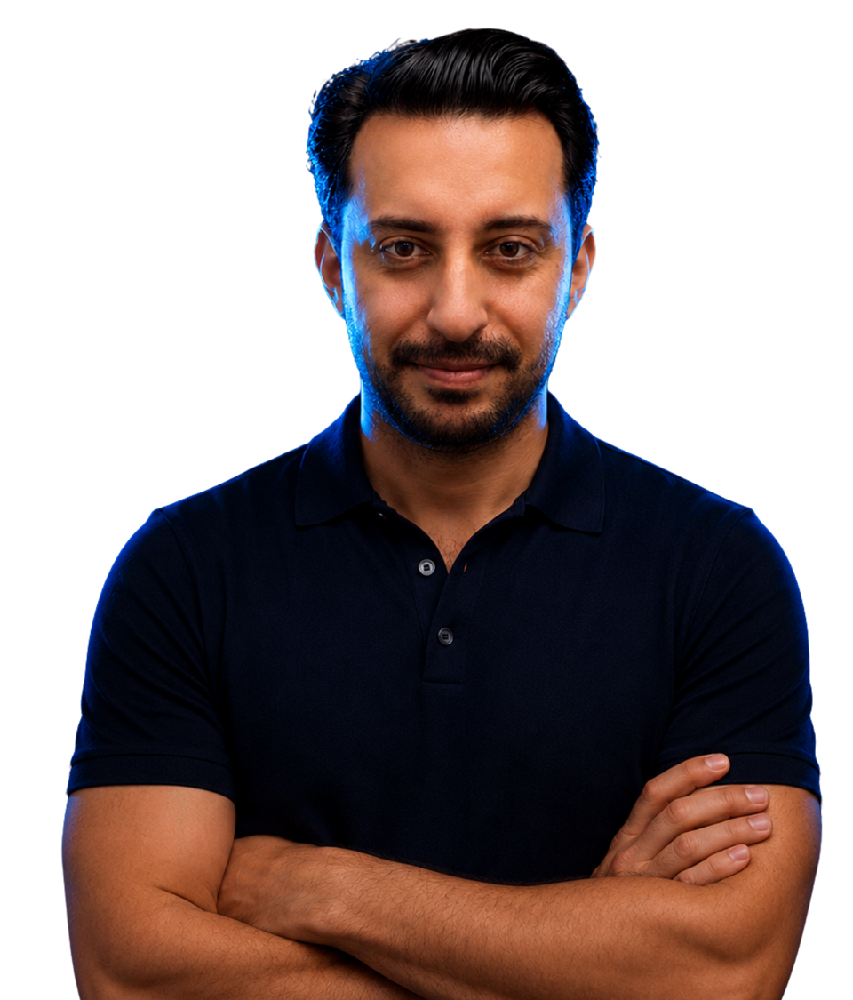
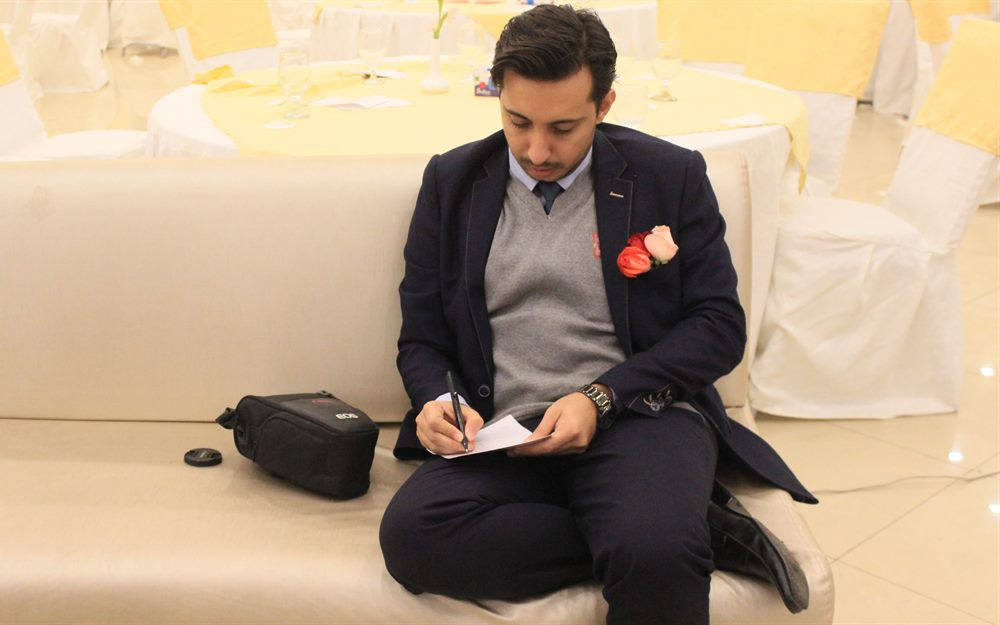
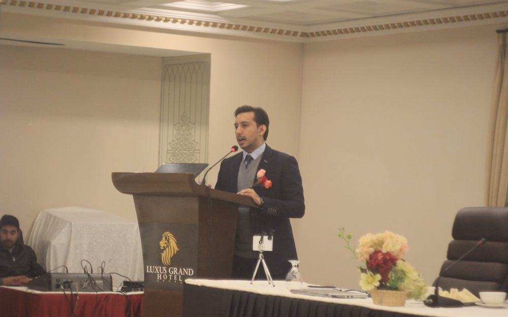
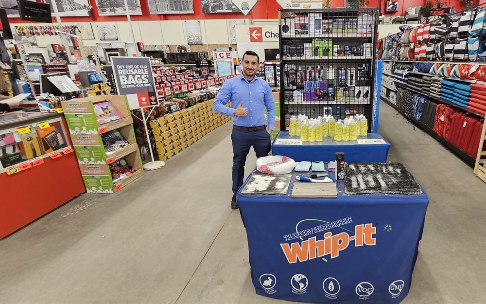

My story
I am a marketer who builds AI systems, for my own business and for solopreneurs like you. Still learning, still building the life I want, out loud.

Where I learned that nothing ships without a system behind it.

Head of Marketing. Then a one way flight to Canada.

No network. No local experience. Back to zero.

Back to my first love: marketing and automations.
The turning point
And to play big, I had to bet on myself. Not stay comfortable inside someone else's plan, but build my own.
My own agency. Systems that grow revenue and save time for other solopreneurs.
AI systems that let one person run the work of a whole team.
Not a toy. A team. Systems that research, write, follow up, and sell while I sleep.
$10K MRROne person, the output of ten.
See how we workSystems, tools, content. I have been building since long before anyone paid me to.
I know what earns money. A $130M portfolio and my own clients taught me the hard way.
I teach it in plain English, because I have been the outsider with no map, and I know what that costs.
If you are starting over right now, you are not behind. Every reset made the next build faster.
I am building my AI systems in public and sharing every step, the wins and the failures both.